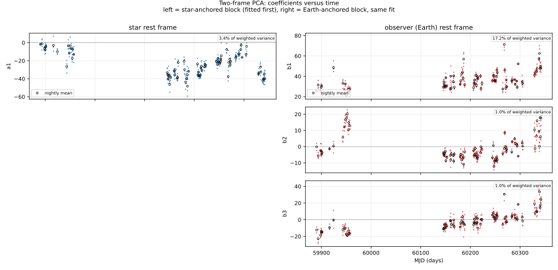
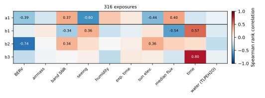

Why two frames separate at all
A spectrum recorded at the telescope is a product of things that live in different reference frames. The star's photospheric lines arrive Doppler-shifted by the motion of the observatory around the barycentre of the Solar System; the absorption imprinted by the Earth's atmosphere, the detector's fringing, and every instrumental artefact do not move with that velocity at all. Over a campaign, the barycentric velocity \(v_{\mathrm{berv}}(t)\) sweeps through a range of tens of km/s, so the same stellar line lands on a different set of detector pixels in February than it does in August.
That sweep is the whole lever. If a feature keeps its place on the detector while the star slides past it, the feature is not stellar. The model below is nothing more than that statement written down with enough care to be solvable.
The sampling grid
Everything is resampled onto one common grid, uniform in \(\ln\lambda\). This is not a convenience: on such a grid a Doppler shift is a translation, identical at every wavelength, so carrying a spectrum from one frame to another is one interpolation with one offset rather than a wavelength-dependent stretch.
with \(\delta v\) the step in velocity units, typically a fraction of a resolution element. A source moving at velocity \(v\) then shifts by
The inverse, used whenever a velocity is read back out of a fitted shift, is \(v = c\tanh(\Delta\,\delta x)\). The interpolation itself is a windowed Lanczos kernel (\(a = 8\)), which preserves the line shapes far better than a cubic spline at the sub-pixel shifts that matter here.
The model, term by term
Let \(y(x, t)\) be the high-passed log flux of exposure \(t\) on the common grid. The model is
- \(\bar{S}\): the star's mean spectrum, in its own rest frame. It has no free amplitude. It enters with a coefficient of exactly one, so the fit cannot scale the star down to let an Earth component explain a stellar line. This was measured, not assumed: the first stellar component \(P_1\) comes out orthogonal to the mean, which is what one wants if the mean is genuinely carrying the star.
- \(P_i\): stellar variability: what changes in the star's own frame from one exposure to the next. Activity, line-shape changes, and whatever the template does not capture.
- \(Q_j\): the observer block: telluric residuals, fringing, detector persistence, anything fixed in wavelength at the telescope.
- \(\delta x_t\): the shift, in grid pixels, that carries the star's frame into the observer's for exposure \(t\). It is built from \(v_{\mathrm{sys}} - v_{\mathrm{berv}}(t)\) through the relativistic relation above.
- \(\varepsilon\): what is left, which is what we hope is photon noise.
Both \(P\) and \(Q\) are found from the data by a weighted PCA on the cube itself. Nothing here comes from a model atmosphere or a telluric line list: if the fit says a component sits still at the telescope, it is because the campaign showed it sitting still.
How it is solved
The two bases and the amplitudes are not known at the same time, so the fit alternates. Each half-step is linear and closed-form; only the alternation is iterative.
- Build the cube. Every exposure is resampled onto the common grid with its variance, its telluric transmission and its mask. Nothing is co-added: the cube is \(N_{\mathrm{exp}} \times N_{\mathrm{pix}}\).
- Take the star's mean. Carry every exposure into the star's rest frame and take a weighted median down the time axis. This is \(\bar{S}\), and it is also what the high pass is taken against (why that matters).
- Solve for the amplitudes. With the bases held fixed, each exposure gives an independent linear least-squares problem in \((a_i, b_j)\), weighted by the inverse variance of each pixel.
- Update the bases. With the amplitudes held fixed, a weighted PCA of the residual in each frame (the star's residual carried into the star's frame, the observer's left where it is) gives the next \(P\) and \(Q\).
- Repeat until the \(\chi^2\) stops moving.
The weighted least-squares step, per exposure, is the normal equation
where \(\mathbf{M}_t\) stacks the shifted \(P_i\) and the unshifted \(Q_j\) as columns, \(\mathbf{W}_t\) is diagonal with the inverse variances, and \(\bar{S}_t\) is the mean carried to that exposure's frame. Writing the mean on the right-hand side rather than as a column of \(\mathbf{M}_t\) is exactly what fixes its coefficient at one.
What the amplitudes do in time

The sanity check

What is written back
The correction applied to the files is the observer block alone, evaluated on each exposure's own original wavelength grid and divided out of the delivered flux:
Nothing stellar is removed, nothing is smoothed, nothing is masked on the way out, and the grid is never changed. A corrected file holds exactly what the report's third panel shows, sample for sample, which is a property the test suite checks rather than a claim.

Choosing the component counts
--n-star and --n-earth are the only two numbers
the user has to pick, and they trade the same way every regularised fit
does: too few and the correction is incomplete, too many and the star
starts to be absorbed into the Earth block.
--n-star 2, the second stellar amplitude starts following
the sky: the fit absorbs a 232 m/s shift into it and the LBL rms
climbs to 67 m/s. One stellar component is the nominal choice for a
reason, and the degeneracy is the reason.